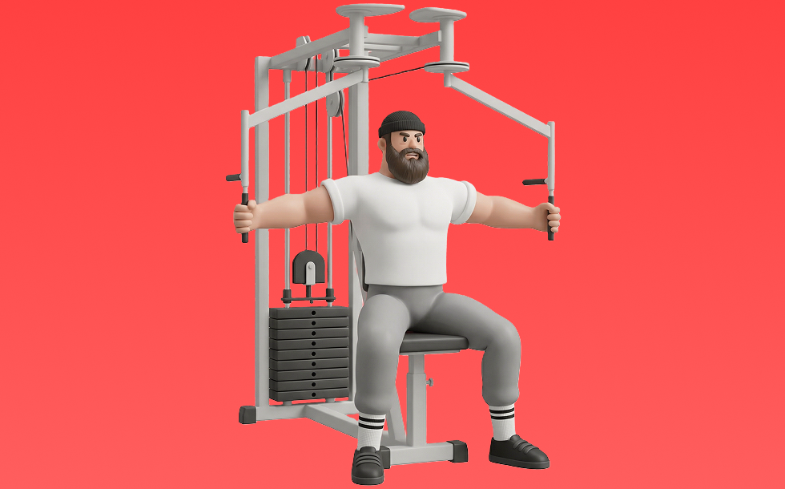

Pec Deck

Use a machine to arms-together flye motion. Open the arms and bring them together with the pecs. Targets pecs (focus on adduction/feel); stable path and easy to load safely. Great for pec contraction and shape.
- Primary Muscle Group
- Chest
- Detailed Muscles
- Pectorals / Front delts / Triceps
- Equipment
- Machine
- Also Known As
- ペックデックフライ
YouTube Videos
-
How to PERFECT The Pec Deck | (CHEST FLY MISTAKES & TIPS)
-
The Chest PEC DEC FLY | Exercise Form Guide
-
How to Perform a Peck Deck Fly | Hunter Labrada
-
How to Seated Machine (Pec Deck) Chest Fly
-
How to Do the Pec Deck Fly for Maximum Chest Growth and Safety
-
Chest Fly Tutorial | Beginner’s Guide to Gym Machines (Build Your Chest)
-
HOW TO DO USE THE PEC DECK MACHINE| Coach Kelly Cues
-
STOP Doing Chest Flys Like This (5 Mistakes Slowing Your Chest Gains)
YouTube Shorts
-
How to: Properly Use The Peck Deck Chest Fly Machine With Good Form (AVOID THIS MISTAKE)
-
✅ The PERFECT Pec Dec Fly
-
Best Chest Fly Tutorial Ever Made • Pec Deck Machine
-
Machine Pec Deck Fly Feels Wrong? DO THIS
-
How to Position the Pec Deck Fly for Maximizing Chest Growth
-
How to do Pec Deck Fly Properly for Chest Growth
-
How to PROPERLY do Reverse Pec Deck!
-
How to Properly Use The Pec Deck Rear Delt Fly Machine With Good Form (Exercise Demonstration)
-
How to pec deck fly properly for a bigger chest
-
How to do Pec Deck Fly
-
How to setup pec deck fly (without tiring yourself out)
-
🚫 Stop Making These Chest Fly Mistakes! 🚨
-
How To Use The Chest Fly Machine
-
How to do Machine Pec Deck Fly Optimally
-
How to do Reverse Flys for Rear Delts on Pec Deck Fly
-
The PERFECT Cable Chest Fly
-
How to do Pec Deck Machine Fly
-
Can’t feel your CHEST during flys? TRY THIS!
-
FIX THESE Dumbbell Chest Fly Mistakes!
-
How to do Cable Flyes Correctly
-
The Correct Reverse Pec Deck Form @JeffNippard
-
Technique tips to target your rear (posterior) delts with the machine reverse fly (pec deck)
-
Peck Deck Fly...
-
❌ Cable Chest Fly Mistakes
-
Sam Sulek Setting Up the Pec Deck #gym #samsulek #pecdecfly #chest #chestworkout
-
Pec Deck Machine Fly Mistakes
-
❌ Rear Delt Machine Flyes Mistakes (FIX THESE!)
-
Do Cable Flyes LIKE THIS for a BIGGER CHEST
-
DO pec deck chest flyes like THIS
-
🚫4 Biggest Pec Dec Fly Mistakes #fitnesstrainer #gym #shorts
-
Cable fly variations…
-
❌ You're Doing Machine Chest Flyes WRONG!
-
STOP Doing Chest Flys Like THIS!
-
3 Tips to fix your Pec Dec fly form | Form Correction | Episode - 17 |
-
❌ FIX THESE Pec Deck Fly Mistakes!
-
How to do Reverse Pec Deck Flys (and Actually Train the Rear Delts)
-
Best way to Feel your Rear Delts on Reverse Pec Deck Fly
-
Chest Fly Machine
-
Dumbbell chest fly mistakes‼️Dumbbell flys‼️ #shorts #chestworkout #chestday #chest #dumbbell
-
Best way to do dumbbell Rear Delts Flyes
-
How to PROPERLY Use The Incline Chest Press Machine At Planet Fitness (Exercise Tutorial)
-
❌ Dumbbell Fly Mistake (STOP DOING THIS!)
How to Perform
- Set a stable position and brace your torso.
- Press with control without using momentum.
- Lower under control while keeping range of motion.
Form Tips
- Do not shrug your shoulders
- Keep wrists neutral
- Avoid excessive momentum
Pro Tips
- Prioritize form and range of motion before adding load.
- If shoulders feel uncomfortable, reduce load and range.
Rep Guide
General guidelines. Adjust based on your goal, experience, and condition.
- Strength: 1-5 reps
- Hypertrophy: 6-12 reps
- Endurance: 13-20 reps
Get the app
Log your trainingand workoutsin Biggr.Start for freeright now.